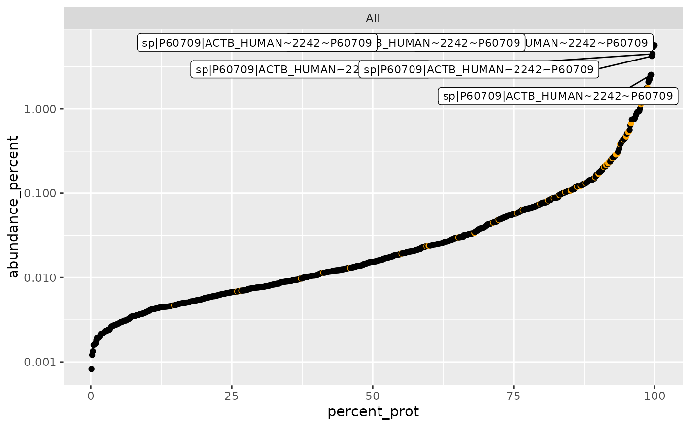
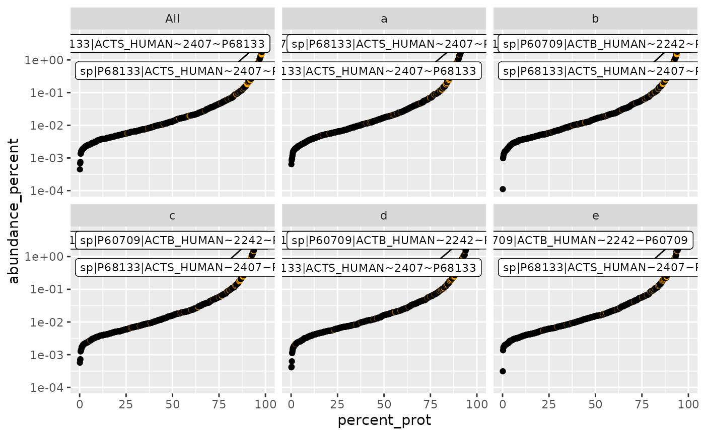
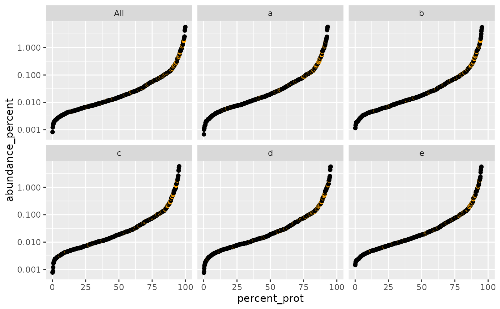

Plot relative protein abundance as a function of rank by abundance
Source:R/plot_abundance_vs_percent.R
plot_abundance_vs_percent.RdPlot relative protein abundance as a function of rank by abundance
Usage
plot_abundance_vs_percent(
percInfo,
cfg_config,
top_N = 10,
factors = TRUE,
colors = c(`^REV_` = "red", `^CON_` = "orange"),
columnAb = "abundance_percent",
group = "BB",
alpha = 1,
logY = TRUE
)Arguments
- percInfo
data frame with percentage abundance info
- cfg_config
AnalysisConfiguration object
- top_N
number of top proteins to label
- factors
if TRUE facet by factors
- colors
named vector of colors for special proteins
- columnAb
column name for abundance values
- group
crosstalk group identifier
- alpha
point transparency
- logY
if TRUE use log10 y-axis
Examples
library(prolfqua)
istar <- prolfqua::prolfqua_data('data_ionstar')
istar$config <- prolfqua::old2new(istar$config)
data <- istar$data |> dplyr::filter(protein_Id %in% sample(protein_Id, 100))
lfqdata <- prolfqua::LFQData$new(data, istar$config)
sr <- lfqdata$get_Summariser()
undebug(plot_abundance_vs_percent)
#> Warning: argument is not being debugged
plot_abundance_vs_percent(sr$percentage_abundance(),
lfqdata$config,
top_N = 6, factors = FALSE, logY = TRUE)
#> completing cases
#> completing cases

pd <- plot_abundance_vs_percent(sr$percentage_abundance(),lfqdata$config, top_N = NULL, factors = FALSE)
#> completing cases
#> completing cases
#> creating shared data with key : ~ protein_Id
plot_abundance_vs_percent(sr$percentage_abundance(),lfqdata$config, top_N = 4, factors = TRUE)
#> completing cases
#> completing cases
#> Warning: Removed 167 rows containing missing values or values outside the scale range
#> (`geom_point()`).

plot_abundance_vs_percent(sr$percentage_abundance(),lfqdata$config, top_N = NULL, factors = TRUE)
#> completing cases
#> completing cases
#> creating shared data with key : ~ protein_Id
#> Warning: Removed 167 rows containing missing values or values outside the scale range
#> (`geom_point()`).
